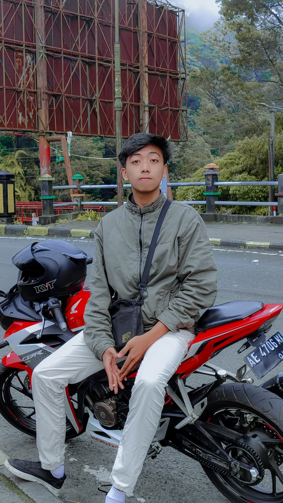
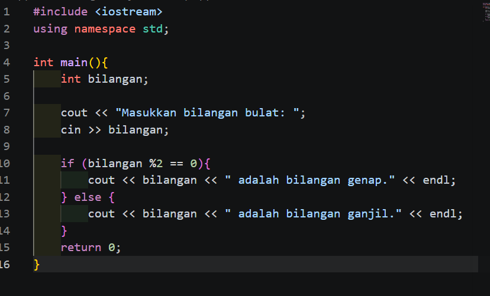
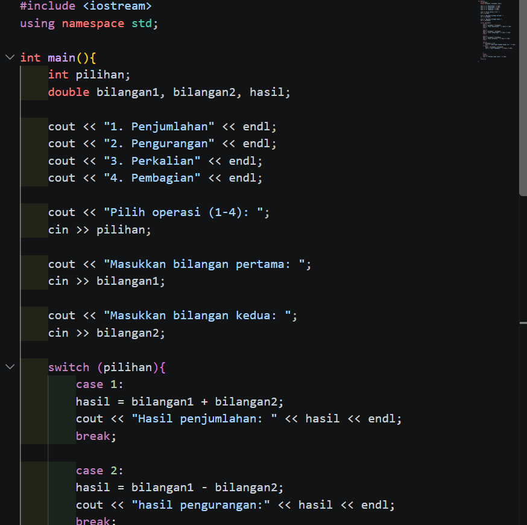
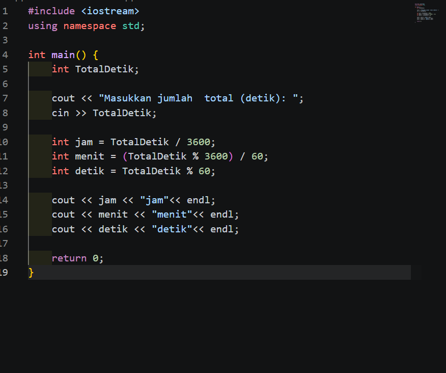

85%
C++ Programming
Memahami tipe data, percabangan (if/switch), perulangan (loops), fungsi modular, struktur data dasar, dan pemecahan masalah algoritma.
Mahasiswa Teknik Informatika Universitas Negeri Surabaya (UNESA) yang berfokus pada pembangunan antarmuka web modern, interaktif, serta implementasi logika pemrograman algoritma yang kokoh menggunakan C++, HTML, dan JavaScript.

Menggabungkan pemikiran logika matematika yang disiplin dari C++ dengan kreativitas visual antarmuka web modern berbasis HTML5, CSS, dan JavaScript.
Saya adalah mahasiswa jurusan Teknik Informatika di Universitas Negeri Surabaya (UNESA). Dalam studi saya, saya menekuni bagaimana logika komputasi dibangun dari dasar melalui bahasa pemrograman sistem C++, mulai dari struktur kontrol, array, fungsi modular, hingga manipulasi algoritma.
Seiring dengan itu, minat saya pada dunia Web Development mendorong saya untuk menguasai trias teknologi web standar industri: HTML untuk semantik struktural yang aksesibel, CSS modern untuk tata letak responsif dan estetika dinamis, serta JavaScript untuk menciptakan interaksi pengguna yang hidup dan intuitif.
Algoritma berbasis C++ yang efisien, terstruktur, dan mudah ditelusuri.
HTML semantik & arsitektur CSS modern dengan variabel dan flexbox/grid.
JavaScript modular murni (Vanilla JS) dengan performa tinggi & ramah aksesibilitas.
// Metadata Pengembang & Mahasiswa UNESA
interface DeveloperProfile {
name: string;
campus: string;
major: string;
coreTech: string[];
modes: string[];
growthMindset: boolean;
}
const rezaProfile: DeveloperProfile = {
name: "Reza Dwi Kurniawan",
campus: "Universitas Negeri Surabaya",
major: "Teknik Informatika",
coreTech: [
"C++", // Logika & Algoritma Dasar
"HTML5", // Semantic Web & Struktur
"JavaScript", // DOM & Interaktivitas
"CSS3" // Responsif & Glassmorphism
],
modes: ["Dark Mode 🌙", "Light Mode ☀️"],
growthMindset: true
};Jalankan logika algoritma C++ langsung di browser, amati kode aslinya, serta eksplorasi demonstrasi interaktif berbasis HTML dan JavaScript.
if (angka % 2 == 0)
Sebagai Web Developer, Reza selalu memprioritaskan penulisan markup yang ramah mesin pencari (SEO-friendly) dan aksesibel bagi screen reader melalui tag semantik standar HTML5.
Mengendalikan animasi, manipulasi DOM real-time, event listeners, dan transisi tema gelap/terang tanpa memerlukan pustaka berat eksternal (100% Vanilla JS).
Diperbarui secara instan lewat Vanilla JavaScript input & style listeners.
// Switch Tema Gelap / Terang dengan LocalStorage
const themeToggle = document.getElementById('themeToggle');
const savedTheme = localStorage.getItem('user-theme') || 'dark';
document.documentElement.setAttribute('data-theme', savedTheme);
themeToggle.addEventListener('click', () => {
const current = document.documentElement.getAttribute('data-theme');
const nextTheme = current === 'dark' ? 'light' : 'dark';
document.documentElement.setAttribute('data-theme', nextTheme);
localStorage.setItem('user-theme', nextTheme);
showToast(`Beralih ke mode ${nextTheme} ✨`);
});Kombinasi antara bahasa pemrograman struktural, arsitektur front-end, dan perkakas rekayasa web modern.
Memahami tipe data, percabangan (if/switch), perulangan (loops), fungsi modular, struktur data dasar, dan pemecahan masalah algoritma.
Penyusunan kerangka web semantik yang terstandar, struktur dokumen W3C, aksesibilitas (ARIA), dan pengoptimalan SEO teknis pada setiap halaman.
Manipulasi Document Object Model (DOM), penanganan event asinkron, web storage API, animasi interaktif canvas, dan arsitektur logika antarmuka.
Desain tata letak Flexbox & Grid responsif, CSS Custom Properties (Variables), glassmorphism, keyframe animations, dan implementasi tema ganda.
Version control system, commit manajemen, percabangan repositori, dan hosting proyek berbasis open-source untuk kolaborasi tim.
Kemampuan analisis persoalan komputasional, perancangan diagram alir logika (flowchart), dan penerjemahan ke dalam baris kode nyata.
Setiap proyek berikut merupakan hasil pembelajaran nyata dan implementasi praktis konsep logika pemrograman serta teknologi web.

01
Aplikasi console C++ yang menganalisis input angka integer dari pengguna, menerapkan evaluasi modulus n % 2 == 0, dan menampilkan hasil klasifikasi secara real-time.

02Menerapkan konsep percabangan ganda C++ untuk memproses dua bilangan dengan operator matematika (+, -, *, /) serta proteksi division-by-zero.

03Transformasi nilai detik absolut menjadi representasi waktu standar (Jam : Menit : Detik) menggunakan algoritma dekomposisi matematika integer secara presisi.
Dark & Light Mode • C++, HTML5, Vanilla JS
Website portofolio yang sedang Anda jelajahi saat ini! Dirancang khusus dengan tema modern gelap dan terang, animasi interaktif 3D tilt, simulator C++, dan performa ultra cepat.
Setiap pencapaian besar selalu dimulai dari langkah-langkah konsisten dalam memecahkan baris kode setiap hari.
Memulai langkah pertama di Teknik Informatika UNESA dengan mempelajari C++. Menyelesaikan proyek latihan bilangan ganjil/genap, kalkulator aritmatika dengan switch-case, serta konversi waktu.
Mengeksplorasi bagaimana halaman web dibentuk. Memahami hierarki tag semantik, layout responsif dengan CSS Flexbox dan Grid, tipografi web, dan sistem variabel CSS (Custom Properties).
Mengintegrasikan JavaScript modern (ES6+) untuk manipulasi DOM dinamis, animasi scroll reveal (IntersectionObserver), efek partikel canvas, serta sistem toggle tema ganda (Gelap & Terang) yang tersimpan di localStorage.
Terus memperluas wawasan ke arah arsitektur web modern, integrasi API, pengolahan database, serta framework JavaScript seperti React atau Next.js untuk membangun aplikasi skala penuh.
Saya selalu terbuka untuk berdiskusi seputar pemrograman, proyek web, peluang magang, maupun berbagi pengalaman di bidang teknologi.